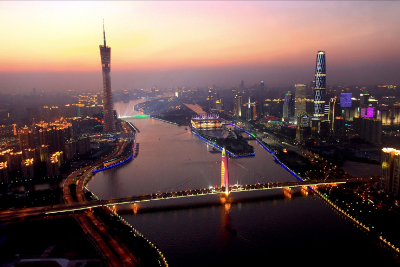
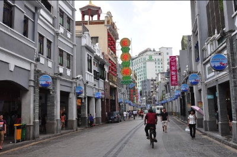

Guangzhou, traditionally romanised as Canton, is the capital and most populous city of the province of Guangdong in southern China. Located on the Pearl River about 120 km (75 mi) north-northwest of Hong Kong and 145 km (90 mi) north of Macau, Guangzhou was a major terminus of the maritime Silk Road and continues to serve as a major port and transportation hub.
Guangzhou is currently, the third most-populous city in mainland China, behind Beijing and Shanghai; holds sub-provincial administrative status; and is one of China's five National Central Cities. In 2015 the city's administrative area was estimated to have a population of 13,501,100 and forms part of one of the most populous metropolitan agglomerations on Earth. Some estimates place the population of the built-up area of the Pearl River Delta Mega City as high as 44 million without the Hong Kong SAR and 54 million including it.

Guangzhou is identified as a Beta+ Global city. In recent years, there has been a rapidly increasing number of foreign residents and illegal immigrants from the Middle East, Eastern Europe and Southeast Asia, as well as from Africa. This has led to it being dubbed the "Capital of the Third World". The migrant population from other provinces of China in Guangzhou was 40 percent of the city's total population in 2008. Most of them are rural migrants, and they speak only Mandarin.
Guangzhou was long the only Chinese port permitted for most foreign traders. The city proper fell to the British and was opened by the First Opium War. It lost trade to other ports such as Hong Kong and Shanghai, but continued to serve as a major entrepôt. In modern commerce, Guangzhou is best known for its annual Canton Fair, the oldest and largest trade fair in China. For the three consecutive years 2013–2015, Forbes ranked Guangzhou as the best commercial city on the Chinese mainland.